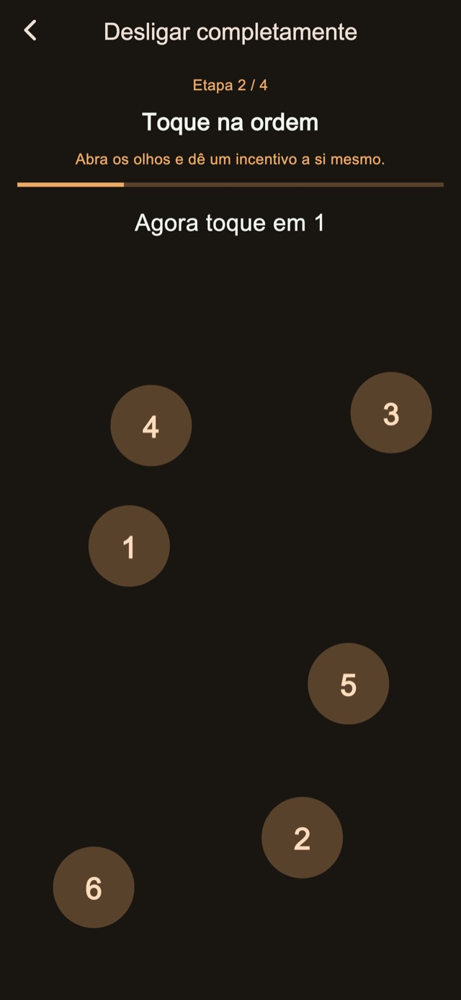
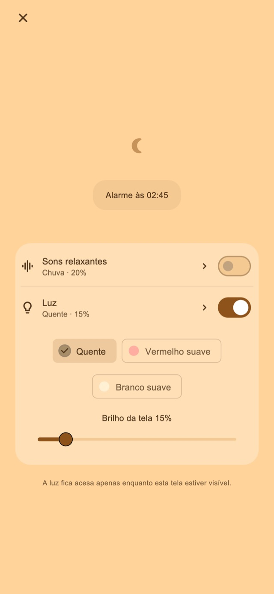

Sons relaxantes
Ouça chuva, ondas ou ruído branco. O som só começa quando você o ativa e diminui gradualmente até parar no primeiro alarme.
Alarme vibratório para cochilos e para depois de colocar seu filho para dormir
Para quem estica a soneca ou adormece ao colocar os filhos para dormir.
01Padrões de vibração
A duração e o ritmo mudam para que a vibração seja diferente das notificações do dia a dia. Essa sensação incomum foi pensada para ajudar você a perceber o alarme e acordar.
Pulsos curtos, longos e em sequência. Escolha entre quatro modos básicos: aleatório, estilo notificação, principalmente longos ou principalmente curtos. A duração e os intervalos variam para mudar o ritmo. Experimente antes de ativar o alarme.
Padrões de vibração
02Vários alertas
Pare apenas o alerta atual para manter os próximos, ou encerre o conjunto para cancelar os restantes.
Salvar a quantidade e o intervalo é um recurso Premium.
Vários alertas
Encerre ao levantar
03Tarefas para parar
Cálculos, números em ordem, toque prolongado e toques repetidos tornam a parada uma ação consciente. Os passos padrão de parada e soneca estão incluídos. Editar e combinar os passos é uma função Premium.

Tela noturna
Ajuste o brilho e a aparência do relógio. Se quiser, o visor desaparece após um tempo sem interação; toque para ver novamente o relógio e os controles.
Escolha uma duração, como 30 minutos, ou o horário de acordar.
Aguarde com a tela noturna aberta. Ative som ou luz se desejar.
Complete os passos de parada e encerre o conjunto quando se levantar.
Sons relaxantes e luz ajustável
Para cochilar ou colocar seu filho para dormir. Ative na tela noturna quando precisar.
Ouça chuva, ondas ou ruído branco. O som só começa quando você o ativa e diminui gradualmente até parar no primeiro alarme.
Escolha luz quente, vermelha suave ou branca suave e ajuste o brilho.
Comece com as funções gratuitas

Grátis / Premium
Quatro modos de vibração, parada e soneca padrão, tela noturna, sons e luz estão incluídos. Algumas telas exibem anúncios.
| Recurso | Grátis | Premium |
|---|---|---|
| Padrões de vibração | ✓ | ✓ |
| Vários alertas | Ajustes padrão | Personalizável |
| Tarefas para parar | Ajustes padrão | Personalizável |
| Tela noturna / Sons relaxantes / Luz | ✓ | ✓ |
| Crie e edite seus próprios padrões de vibração. | — | ✓ |
| Remova todos os anúncios. | — | ✓ |
Escolha um plano mensal ou uma compra única. O plano mensal tem renovação automática e pode ser gerenciado ou cancelado na conta da loja. Consulte os preços e as condições na tela de compra.
Perguntas frequentes
Para usar os padrões de vibração próprios do app, mantenha a tela noturna aberta após ativar o alarme. Ao bloquear pelo botão lateral ou mudar de app, a vibração passa ao controle do iOS e o padrão e a intensidade personalizados não se aplicam. Confira as permissões e os ajustes de vibração e faça o teste de funcionamento antes do uso.
Ouça chuva, ondas ou ruído branco. O som só começa quando você o ativa e diminui gradualmente até parar no primeiro alarme. Escolha luz quente, vermelha suave ou branca suave e ajuste o brilho.
Quatro modos de vibração, parada e soneca padrão, tela noturna, sons e luz estão incluídos. Algumas telas exibem anúncios. Remova todos os anúncios. Ajuste a quantidade e o intervalo dos alertas. Edite os passos de parada e soneca. Crie e edite seus próprios padrões de vibração. Escolha um plano mensal ou uma compra única. O plano mensal tem renovação automática e pode ser gerenciado ou cancelado na conta da loja. Consulte os preços e as condições na tela de compra.
Baixar
Alarme vibratório para cochilos e para depois de colocar seu filho para dormir
Comece com as funções gratuitas
iPhone: iOS 26.1+ / Android: 8.0+